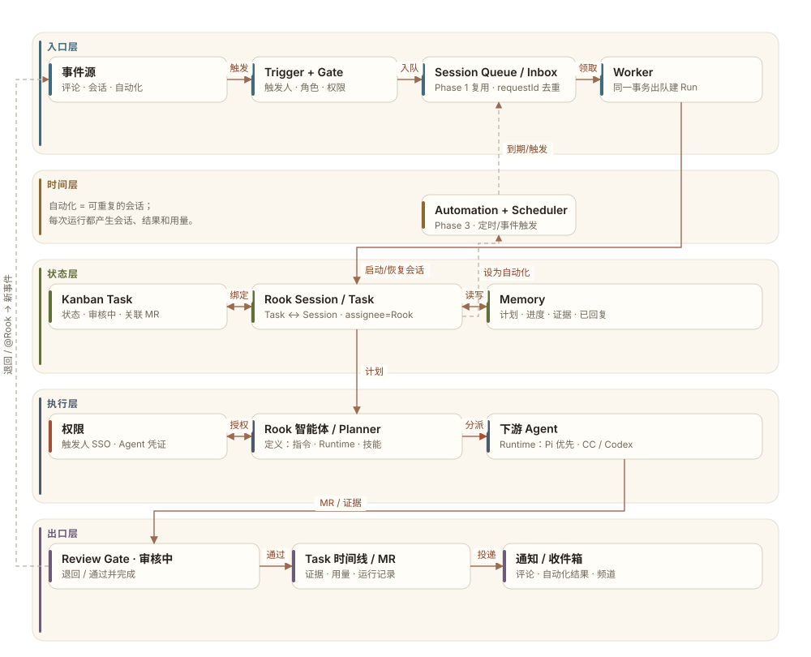

Rook 是一个住在项目管理工作台里的智能体。它作为处理人出现在任务、时间线和运行记录里，可以接 Kanban 问题、做计划、调起下游 Agent 开发，再把结果送到审核闸门。它和普通聊天智能体的差别不在推理循环，而在循环外面的系统：什么时候被唤醒、两次运行之间留下什么、结果怎样到达人和看板。
v2 方案已经给出了一个很务实的起点：不另造一套 Ticket 和 Mandate，而是复用 Task、claim 和 Agent 凭证；不新建一张收件箱表，而是复用 Session 的持久 Queue；Phase 1 只响应显式的 @智能体，不需要模型判断意图。真正要补的是常驻化所需的持久层——跨任务事件、定时器、跨运行记忆、权限边界和投递节奏。
现在更可行的原因有两个。模型判断更好，更能读懂意图，也更知道何时该回来确认；成本更低，长周期任务受益尤其明显。Anthropic 文章给出的数字是：Opus 5.5 在长周期编程任务上，每个已解决任务的成本比 Opus 5 低 78%；典型工作负载低 40%。
v2 方案速览：从智能体定义到事件驱动
v2 把工作拆成四个阶段，每个阶段以一个可验收的用户结果收尾，通过后再进入下一阶段。
@智能体 → 目标 Session 的持久 Queue → Run → 回复写成时间线 activity。Task 状态不变。先跑 Pi；缺的是 @Rook 解析和触发人校验。关键取舍：Phase 1 不新建收件箱。评论直接写入目标 Session 的持久 Queue，复用已有的 requestId 去重、暂停和恢复规则；Durable Inbox 是 Phase 3 为跨任务事件准备的，不是重复造一套 Queue。
先把 Rook 还原成一个事件循环
“常驻”不是进程一直跑，而是随时可以被事件唤醒。一次运行通常是一次短事务：接住事件、打开或恢复会话、计划、执行或分派、写回状态，然后休眠。用户感知到的“一直在”，来自循环没有终点。
设计的支点，是把运行当成无状态的计算单元，把状态放到外部存储。由此得到三个不变量：事件不丢、状态可恢复、行为可控。五个构件本质上是在分别维护这三个不变量。
一次性会话
- 由用户消息触发
- 状态只活在这次会话里
- 逐步流式输出
- 失败由用户重试
- 成本按请求发生
常驻 Rook
- 由评论、会话、自动化、手动运行触发
- Task 与 Session 绑定，状态可恢复
- 输出结果、证据和少量摘要
- 失败由 Worker 重试、会话恢复
- 空闲近乎为零，唤醒时付费
把系统按职责分层，会比按功能罗列更容易落地：
01 入口层：Session Queue 与 Durable Inbox
Rook 的触发面比聊天智能体宽：Kanban 卡片和评论里的 @Rook、新会话、自动化触发、手动“立即运行”，Phase 3 还会包括 MR 评论、告警和外部 webhook。不要让这些来源直接调用智能体。直接调用有两个问题：并发事件会启动互相竞争的运行；进程崩溃会丢事件。
Phase 1：复用 Session Queue
v2 没有为 Phase 1 新建收件箱表，而是把评论写进目标 Session 的持久 Queue。已有链路是六步：
- 写入 Queue，用
requestId去重。 - 唤醒并派发。
- 在同一个事务里出队，并创建 Run。
- 执行 Turn：Agent Loop 里的多个 Step。
- 把回复写成时间线 activity。
- 出错时暂停，由人恢复。
这条链路已经覆盖了收件箱的大部分职责：持久化、去重、单活跃消费者、失败暂停。Phase 1 真正缺的是两件事：@Rook 解析和触发人校验。
Phase 3：跨任务的 Durable Inbox
当 MR 评论、告警、定时事件也要唤醒 Task 时，单个 Session 的 Queue 就不够了。这时才需要 Durable Inbox：一张事件表、一个 Worker、一套 Scheduler。Worker 领取事件，Scheduler 到期写入同一个入口；入口仍然只有一个。
不要把 Queue 和 Inbox 混成一套。Queue 是 Session 内部的请求队列，按 requestId 幂等；Inbox 是跨任务的事件入口，需要自己的状态、来源 ID 和重试策略。两者共享“先落持久记录，再交给执行单元”的原则，但不是同一张表。
至少一次投递意味着幂等。Queue 的 requestId 去重是第一层；工具调用也要幂等，或者把“已执行”写进事件状态。否则重试会重复发评论、重复建 MR、重复改任务状态。
入口层要定下的四件事
requestId；Inbox 用来源提供的稳定 ID，而不是时间戳或自增序号。02 时间层：定时器与自动化
Rook 的自动化有两种触发语义：时间触发（每天 09:30、每小时整点）和事件触发。每次自动化运行本身也是一次会话，产生结果和用量；任务页上的“设为自动化”，就是把一次会话变成可重复的调度。这些在 v2 里属于 Phase 3。
把定时器放进 Session Queue 或 Inbox，会污染“现在可做”的语义。更清晰的做法是独立一张表。定时器到期不直接启动运行，而是由 Scheduler 转成入口事件。这样入口只有一个，重试、去重、并发控制都复用同一套逻辑。
Scheduler 的每一轮只做三件事：找出到期项；按类型更新（一次性 follow-up 标记完成，周期 schedule 推到下一次）；写入入口并唤醒 Worker。
v2 的缺口：一次性 follow-up 是否支持还没有确认。如果要做，需要独立的 Timer store 和补触发策略：进程停了一段时间，恢复后要不要补跑错过的周期？补跑几次？时区、夏令时、时钟漂移怎么处理？这些要在表结构里写清楚，而不是留给 Scheduler 的实现细节。
03 状态层：记忆
Rook 的记忆不是聊天记录的别名，而是跨运行的工作状态。它至少要让下一次运行知道：这个任务的背景和评审标准是什么、上次做到哪、已经告诉过谁什么、有哪些证据。一条实用原则是：只存无法重新取回的东西。能从任务、MR、仓库或工单里查到的，存指针，不存副本。
v2 的一个硬约束是：跨运行笔记必须持久化到 MySQL，因为容器文件是临时的。一个可用的布局是：
MySQL
├── agent_definition # 加密配置文档：指令 / Runtime / 技能
├── task_session # Task ↔ Session 绑定
├── session_queue # requestId 唯一，持久 Queue
└── agent_notes # 跨运行笔记：任务上下文 / 进度 / 已回复v2 明确把 dreaming 排除在当前范围之外。也就是说，目前不做“回看历史会话、自动整理记忆”的后台过程；记忆的写入和清理先靠显式规则。
上下文是固定成本
每次运行开始，都要加载系统提示、工具定义、智能体指令和常驻记忆。这份开销每轮重复，所以要精简，并用 prompt caching 降低成本。新会话只包含这份开销加上触发事件；续接的会话还会恢复之前的消息和工具调用。会话太长时，可以压缩旧消息或开新会话，但两种办法都会丢细节，因此重要信息要在工作过程中就写进记忆。
二次解读：记忆是产品界面，不只是存储。用户应该能看见、纠正、删除记忆；否则一个错误会跨运行放大。v2 还没有定记忆的可见性、过期和删除策略，这是落地前要补的。
04 安全层：权限
Rook 在 Kanban 里是一等 assignee，会出现在处理人、时间线和运行记录里。但这不等于它有一个独立的服务账号：v2 的默认执行身份是触发人的公司 SSO 与 Provider，与自动交付保持一致；Task 的 claim / accept 这类归属动作使用 Agent 凭证。
延迟调用值得单独设计。它不是超时重试，而是把“等人”变成一个一等状态：运行结束、会话快照保存、请求送达用户、回答进入 Queue、新运行恢复会话。等待期间 Worker 不被占用。实现上要保证快照可恢复，并且恢复后不会重复执行已经产生副作用的步骤。
v2 的缺口：当前没有高风险动作分类器。权限主要靠执行身份、工作区角色、技能可见性和评审闸门；如果 Rook 以后能直接操作生产、财务或对外发布，需要补一层自动阻断或强制升级审批。另一个风险是审批疲劳：评审闸门不能变成“闭眼点通过”。
05 出口层：发件箱
Rook 在后台工作，用户不需要看每一步；他们需要的是结果、影响和下一步。v2 的出口很直接：回复写成时间线 activity；WeCom 通知记录发送状态。目前没有独立的 Outbox 表，也没有显式的“无需回复”结果。
多数场景一个简单的 send 工具就够了；只有当需要控制消息节奏或从错误中恢复时，才需要正式的发件箱。它和入口一样是一张表；Dispatcher 读取待发消息，决定发什么，再投递给用户。
消息量是产品参数，不是实现细节。发太多是噪音，发太少会漏掉重要事项。文章的建议是用 eval 找平衡，并且从安静开始，让智能体逐步赢得用户的注意力。
v2 的缺口：没有显式的“这次不需要回复”状态，也没有消息量 eval。对评论型入口，这意味着每条 @ 都可能换来一条回复；任务一多，噪音会很快累积。建议先补 no-reply 判定和投递去重，再补 eval。
Rook 的运行时结构
把五个构件落到 Rook 上，会得到一条完整的链路：评论、会话和自动化从入口进来；Rook 在 Task 与 Session 的绑定里恢复上下文；Planner 做计划，必要时把开发分派给下游 Agent；结果经过评审闸门，回到任务时间线和通知。


v2 的待决定项：触发词用 @superagent 还是 @Rook；是否支持一次性 follow-up；谁能创建智能体（默认 enabled RD，admin 可禁用）；可见性是默认组还是仅创建者；Multica 和需求页设计是否会改变 Phase 1 的形态。执行身份（触发人 SSO/Provider）和“Task 会话”命名已经作为默认方案。
Rook 的三类工作
Rook 的入口不止一个，但底下的执行单元是同一套：Session、Task 和审核闸门。区别只在入口，以及是否把开发分派给下游 Agent。

处理 Kanban 问题
卡片或评论里的 @Rook 是最直接的入口。Phase 1 里，Rook 读取任务背景和评论，把答复写回时间线，Task 状态不变；需要开发时进入 Phase 2，Rook 以 Agent 身份 claim / accept Task，在会话仓库根目录改代码，再把 MR 链接作为交付物提交给验收人。
调起下游 Agent 开发
当任务需要改代码时，Rook 不必自己变成执行型 Agent。它可以选择下游 Agent（Runtime 先跑 Pi，Claude Code / Codex 按接入或降级方案处理），把工作区、分支、验收标准和证据要求一起分派下去。下游执行完，Rook 汇总 MR 链接和证据，再提交人审。这里的关键是边界：下游 Agent 只拿到完成任务所需的仓库和工具，不继承 Rook 的全部权限。
响应事件
评论、MR 评论、告警和定时任务都可以唤醒 Rook。Phase 1 的评论进入目标 Session 的 Queue；Phase 3 的跨任务事件才进入 Durable Inbox，再由 Worker 领取。如果已经有 Task 会话，就恢复上下文，否则新建。Rook 的结果通过时间线、评论、收件箱或频道送达。一次会话还可以“设为自动化”，变成以后重复运行的调度。
会话是入口，Kanban 是承诺，任务页是评审，自动化是重复。
Rook 工作台设计 v0.4
这句话已经把常驻化的骨架说清楚了：入口、承诺、评审和重复，分别对应上面的入口层、状态层、出口层和时间层。
一次 @Rook 运行
以 Kanban 评论触发为例。用户在任务评论里 @Rook，要求修复一个问题；这条评论进入 Trigger + Gate，通过触发人和工作区权限检查后写入目标 Session 的 Queue。Queue 在同一个事务里出队并创建 Run，启动一次执行。

- Rook 加载智能体定义（指令、Runtime、技能）、任务背景、计划与进度、已回复内容，避免重复劳动。
- Phase 1 直接生成答复，写成时间线 activity；Task 状态不变。如果这次运行来自会话，Rook 会先给计划并等待确认。
- 需要开发时进入 Phase 2：Rook 以 Agent 身份 claim / accept Task，在会话仓库根目录工作；需要分派时，把任务交给下游 Runtime。
- 下游返回 MR 链接和证据：单测结果、diff 大小、staging 观察、步骤数、token 用量、耗时。凭证由代理注入，不落到 Agent 里。
- Rook 汇总后提交评审，任务进入“审核中”。验收人退回或通过；退回或评论都会变成新的 Queue 事件。
- Rook 写回时间线和任务状态。如果这次会话值得重复，可以设为自动化，交给 Phase 3 的 Scheduler 在未来再次唤醒。
这条链路里，五个构件各司其职：Queue 接住评论，Scheduler 接住“以后再看”，记忆接住“上次做到哪”，权限接住“能不能改这个仓库”，出口接住“让人知道结果”。任何一层缺失，Rook 都会退化成一次性脚本。
与 v2 方案的差距
把五个原语逐项对照 v2，会得到一张比“功能清单”更有用的工作单：哪些已经就位，哪些是明确的缺口。
这不是缺陷清单，是常驻化的下一步工作单。Phase 1–2 先把“能接、能答、能交付”跑通；Phase 3 再补跨任务事件、定时器和投递节奏。不要在第一阶段就把五层全部建完。
落地时的取舍
复用 Task 还是另造授权模型
Task、claim 和 Agent 凭证已经能表达“谁授权 Rook 做什么”，就不要再造 Ticket 或 Mandate。两个名字指同一件事，后面一定会对不齐。
Rook 自己做 vs 调下游 Agent
规划、汇总和评审留在 Rook；重执行交给下游 Runtime。边界要写清楚：工作区、分支、验收标准、证据格式和返回路径。
至少一次 vs 恰好一次
Queue 用 requestId 幂等；Inbox 用来源 ID 去重。与其追求恰好一次，不如把运行和工具调用做成幂等，再用去重表兜底。
并发 vs 顺序
同一任务同一时间只应该有一个活跃的 Rook 运行。用 Task claim 或租约避免两个运行同时改同一个任务。
记忆丰富 vs 上下文成本
索引常驻，详情按需。指令有长度上限；记忆越全，每轮固定开销越大，用 prompt caching 和分层加载控制成本。
自治 vs 审批疲劳
计划确认和评审闸门是两次人机接触点。不是所有动作都值得问；按风险分级，把注意力留给不可逆的决定。
消息量 vs 信任
先用 eval 找到“不漏重要事项”的下限，再从安静开始。频繁打扰会消耗信任，而信任很难恢复。
自建 vs 执行引擎
先自建最小闭环，把 Queue、状态、重试跑通；当定时器和恢复逻辑开始变复杂，再评估持久化执行引擎。
落地顺序
- Phase 0：先做智能体定义（名称/@handle、指令、Runtime/模型、技能、可见性、负责人），存加密配置文档，不新建表；Rook 作为第一个内置智能体。
- 建立 Task ↔ Session 绑定（“Task 会话”）；没有这个绑定，后面的常驻化都是空中楼阁。
- Phase 1：补 @Rook 解析和触发人校验；评论写入目标 Session 的持久 Queue，同一事务出队建 Run，回复写成 activity，Task 状态不变。
- Phase 2：实现 Agent 身份的 claim / accept、会话仓库根目录开发、MR 交付和验收人退回/通过。
- Phase 3：再引入 Durable Inbox、Worker 和 Scheduler，覆盖 MR 评论、告警、定时事件；明确 follow-up 和补触发策略。
- 记忆：跨运行笔记落 MySQL；指令设长度上限；先不做 dreaming。
- 权限：执行身份沿用触发人 SSO/Provider；Agent 凭证负责归属动作；评审闸门先行，高风险分类器后补。
- 出口：先写时间线 activity 和 WeCom 发送状态；补“无需回复”判定和投递去重，再做消息量 eval。
- 观测：Queue 积压、Run 时长、下游失败率、评审等待、重复投递。